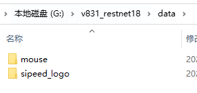
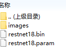

图像分类模型训练过程
| 时间 | 负责人 | 更新内容 | 备注 |
|---|---|---|---|
| 2022年1月22日 | dianjixz | 编写初稿文档 | 训练教程只能在 Linux 系统中运行， 并只能部署到 MaixII-Dock 开发板上运行， 文档还需要二次整理 |
图像分类主要采用 resnet18 网络结构，使用 Pytorch 框架进行搭建，再将经过训练、转换和量化后的模型文件部署到 MaixII-Dock 上。
准备
获取训练工程文件
可以在 GitHub 上下载压缩包或者是通过 git 克隆到本地
git clone https://github.com/dianjixz/v831_restnet18.git
工程文件结构介绍：
├── classes_label.py #分类标签
├── classifier_resnet_test.py #测试程序
├── classifier_resnet_train.py #训练程序
├── convert.py #模型转换程序
├── convs_data #存放经过 onnx2ncnn 转换之后的模型文件
├── data #训练数据文件夹
├── out #训练模型输出文件夹，每隔一定训练周期输出一个模型参数
└── test #测试数据集文件夹（不分类别）
数据集的制作与使用
使用手机或者 MaixII-Dock 来对物品进行拍摄，将拍摄的图片进行导出，按照类别分类到文件夹中，并以类别名来命名对应的文件夹。图片最好是以数字进行命名，这样可以减少一些奇怪的 BUG。
注意！数据集中图片的分辨率需要是 224*224
数据集 data 文件夹结构
── mouse
│ ├── 1.jpg
...
├── sipeed_logo
│ ├── 1.jpg
...
...
将整理好的数据集，复制到训练工程文件中的 data 文件夹下，将 classes_label.py 里面的 labels 值修改成 data 下的文件夹名字。
- 例如：data文件夹内为

则将 classes_label.py 修改成
python labels = ["mouse","sipeed_logo"]
训练:
训练的相关参数，在工程中的 classifier_resnet_train.py 文件里面，可以根据自己的需要进行修改，不懂怎么修改的，就保持默认就好了
dataset_path = "data" #训练集的路径
val_split_from_data = 0.1 # 10% #学习率
batch_size = 4 #训练批次
learn_rate = 0.001 #学习率
total_epoch = 100 #训练循环，总共需要训练100个循环
eval_every_epoch = 5 #每个循环训练次数
save_every_epoch = 20 #多少个循环保存一次
dataload_num_workers = 2
input_shape = (3, 224, 224) #输入尺寸
cards_id = [0] #使用的训练卡
param_save_path = './out/classifier_{}.pth' #参数保存路径
开始训练，在 resnet18 工程文件夹目录下运行
python3 classifier_resnet_train.py
训练完成后，会在工程目录下生成一个 out 文件夹，在 out 文件夹下存放着训练过程中保存的训练参数。
例如：
.
├── classifier_99.pth #训练过程中保存的参数
├── classifier_final.pth #训练完成后保存的参数
└── classifier.onnx #生成的onnx深度学习网络文件
测试
到这里，windows 的用户就需要在训练工程文件夹中打开 wsl
准备好你的测试图片，注意和数据集中的图片尺寸一样。新建一个 test 目录，并放在该目录下。
进行模型测试
python3 classifier_resnet_test.py images_folder_path model_param_path
- images_folder_path ：测试图片文件夹的路径
- model_param_path ：模型文件的路径，一般都是在 out 文件夹下
在该命令中会调用用户环境中的 onnx2ncnn 转换工具，请确保训练环境已经搭建好了。
运行完测试后，会生成 ncnn 模型和 ncnn 模型参数。
模型量化
生成的 ncnn 模型此时还无法被 v831 直接使用，需要使用 MaixHub 在线模型转换工具进行量化模型，转换成 MaixII-Dock 可以直接使用的 awnn 模型
将一下内容整合到一个压缩包中：
- 创建为 images 的文件夹，内容一些校正图片，可考虑直接采用训练中的验证数据集，并务必保证校正时图像的预处理方式与训练和部署时一致。（数量在50张左右）
- 将训练结束之后得到的模型文件一个 xxx.bin 和一个 xxx.param。
- 压缩包内文件结构如图：

注意：确保 images 目录内没有混入其他文件，否则会导致模型量化错误。
注册登录并激活账号后,上传你的压缩包等待模型转换任务完成。
模型部署
等待模型转换完成,下载转换好的模型文件。将得到的 .param 、 .bin 和训练工程中 classes_label.py 文件放传到 MaixII-Dock 的 U盘中。
将以下代码复制到开发板上即可使用
from maix import nn, display, camera, image
from root.classes_label import labels #分类标签,根据个人需求自行替换
import time
model = {
"param": "/root/restnet18_int8.param", #模型文件,需要替换成自己训练的模型路劲
"bin": "/root/restnet18_int8.bin"
}
options = {
"model_type": "awnn",
"inputs": {
"input0": (224, 224, 3)
},
"outputs": {
"output0": (1, 1, len(labels))
},
"first_layer_conv_no_pad": False,
"mean": [127.5, 127.5, 127.5],
"norm": [0.00784313725490196, 0.00784313725490196, 0.00784313725490196],
}
print("-- load model:", model)
m = nn.load(model, opt=options)
print("-- load ok")
while True:
img = camera.capture()
AI_img = img.copy().resize(224, 224)
t = time.time()
out, = m.forward(AI_img, quantize=True)
t = time.time() - t
print("-- forward time: {}s".format(t))
msg = "{}%: {}".format(int(out.max() * 10), labels[out.argmax()])
print(msg)
img.draw_string(0, 0, msg, color = (255, 0, 0))
display.show(img)
运行效果：